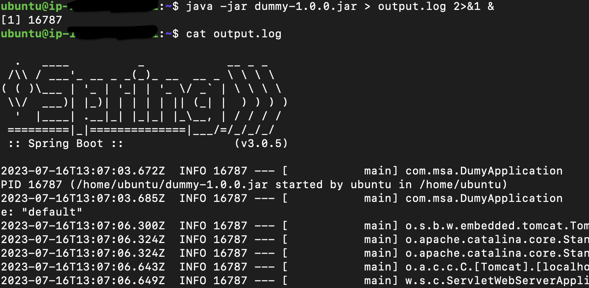

Docker [E03]: Cgroups
Table of Contents
Intro
We took a dive into namespaces, then we discussed how PID namespace achieves the isolation of process IDs. Let’s now talk about cgroups. We will get to the namespace later, but for now, we will start discussing cgroups and the discussion will proceed interchangeably between the two topics.
Namespaces VS Cgroups
We mentioned that the main use of namespaces is to provide process level isolaion by virtualizing system recources that allows processes to have their own isolated view of the system recources such as process IDs, network interfaces, file systems, etc. Is that enough? No, there is more to achieve standalone isolated system. For example, what about the process allocated memory? How can we limit the memory usage of one process? These are questions that are not answered by namespaces.
Cgroups
Control groups, usually referred to as cgroups, are a Linux kernel feature which allow processes to be organized into hierarchical groups whose usage of various types of resources can then be limited and monitored.
Terminology:
- cgroup: a collection of processes that are bound to a set of recource limits. It is an abstract concept in our discussion.
- subsystem: is the acutal kernal component that implements the functionality of the abstract concept (cgroups). It also known as Resource Controllers.
How to interact with Cgroup controllers?
As they are a part of the kernel, we need a way to be able to alter them. The cgroups for a controller are arranged in a hierarchy. This hierarchy is defined by creating, removing, and renaming subdirectories within the cgroup filesystem. each linux distro supports a set of controllers that are mounted in most of the distros in /sys/fs/cgroup. One thing to know about the /sys directory in Linux is that it is created every time the system boots, so any data inside this directory is not persistent. This is suitable for what we are doing, isn’t it? As if we created a set of rules that apply to one cgroup and a certain process joined that group, it should apply until the os is shut down. Once the os is started again the process will not evern exist, so should be its rules. That said, let’s see what cgroup controllers exist on my machine (I am using Ubuntu 20.04 server).
ls -l /sys/fs/cgroup
These are the cgroup controllers supported on my machine mounted in the /sys/fs/cgroup directory. Each one of these directories represent the root cgroup controller of each type. If we take a look on the memory controller for example, we will find some files that we need to alter to change the memory usage of any process in this cgroup.
The memory.limit_in_bytes is the file that contains how much memory in bytes this cgroup processes should consume. The tasks folder contains all the PIDs of the processes in that group on which the rules of this group should apply.
ls -l /sys/fs/cgroup/memory/
As these are the root controllers, the rules here will apply on all the system. Specifically, the systemd process. Which means that the memory.limit_in_bytes will contains a value equal to 9223372036854771712KB on my machine :)
What is the structure of the cgroups?
So to create a cgroup that should apply to a specific set of processes, not the who system, we just create a subdirectory in the root directory of the controller that we are targeting. Let’s continue with the memory controller. If we create a sub directory called my_server_memory_group. This will create a child cgroup from the root and there are few things to mention here:
- The my_server_memory_group will contain the files needed, same as the parent.
- The tasks folder will be empty, because there no process assigned to that cgroup.
- All the rules in the parent cgroup will also apply on the child.
Setting a limit to the memory cgroup:
Let’s now set a limit to the child cgroup that we created, as now it still hold the limit of the root. I will set a limit of 800KB.
echo "800000" | sudo tee memory.limit_in_bytes
I have created a spring boot server that has an object that consumes more memory with time, so let’s run this server and assign it to the created group and see what happens when it hit the limit.
Now, I should add the PID of my server with PID 16787 to the tasks file in the my_server_memory_group
echo "16787" | sudo tee tasks
Let’s now check what cgroups are applied on my process by checking the kernel proc directory for my process.
cat /proc/16787/cgroup
my_server_memory_group is now applied on my process, so if it hits the limit assigned to it, the kernel controller should take an action to handle that (by default killing the process). After waiting for while so that my process tries to consume more memory, then checking the status of my process, guess what, it is killed ⚔️
ps -p 16787